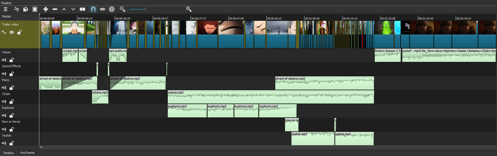

This trailer was created for the anime Re:Zero - Starting Life in Another World. The anime contains some of the most
beautiful scenes as well as some of the most gruesome. I wanted to be able to protray both equally and to do this I chose a few sets of music.
One amazing piano song and then eerie brass songs. I used a lot of hard transtions because this made the cuts much more profound.

Sources: